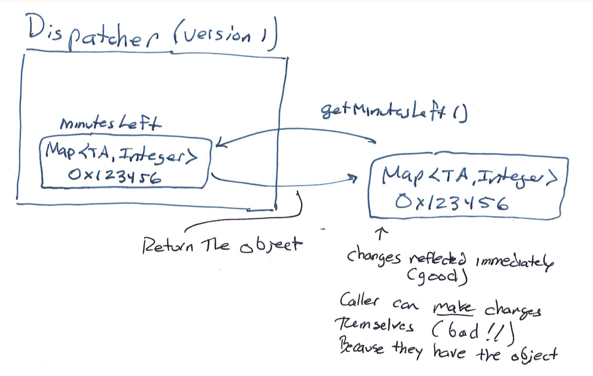
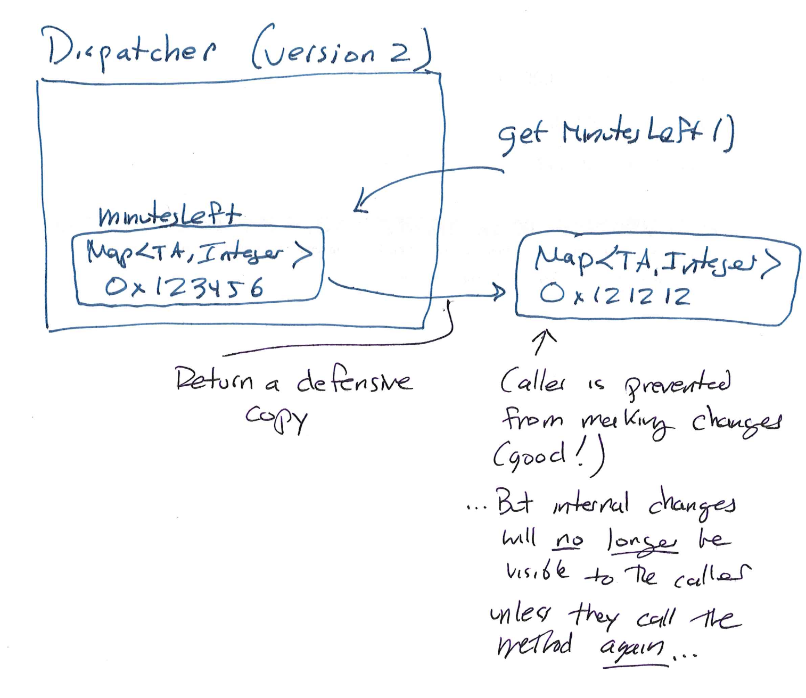
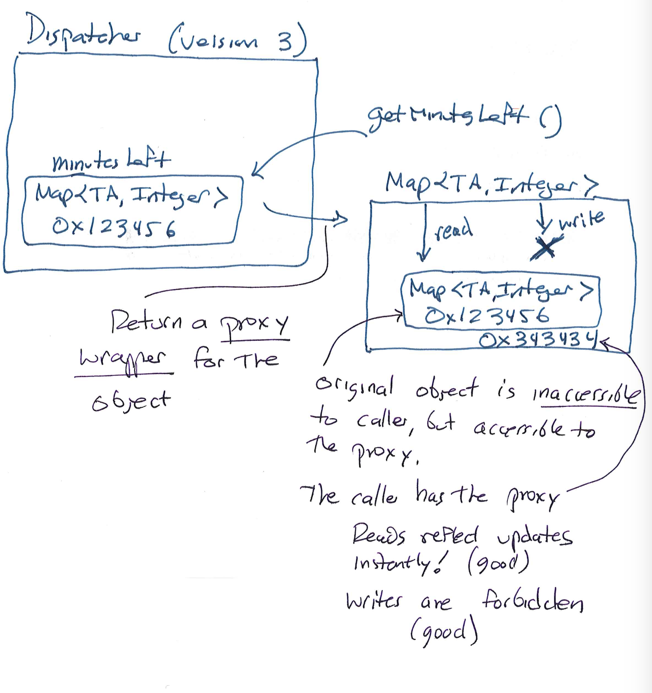

Proxies and Adapters
In Sprint 2.1, we'll begin expecting some defensive programming from you. Today covers a few of those techniques. In Sprint 2.2, many of you will need to implement a proxy, which we also cover today.
These are different ideas, but proxies can often be used for defensive purposes.
Today we'll cover some topics in defensive programming and introduce the proxy pattern. I will actually be live-coding some of this, so there may not be anything in the class-livecode repository to begin with. But I'll push the code we end up with after class.
Today is the last day of shopping period. Some classes will contain exercises in various forms, and some may become "flipped", especially as the semester progresses.
Contracts
If you write code someone else uses, there is an implicit agreement between you. They provide your code with something. You give them something back. In both directions, there is an obligation. You might tell them:
"The constructor of my
TAHoursclass should take an instance of an object implementing theIterator<Student>interface.
At a high level, that's an obligation on their part. They need to make sure the object they pass obeys that criterion. Fortunately, for this kind of obligation, Java's type system suffices to enforce it.
But you might also say:
"At any point at which at least one TA is free, the next student in the given iterator will be dispatched to one of those TAs before any other student is dispatched."
That's an obligation on your part. And this time, the obligation is also a bit too subtle for Java's type system.
These sorts of contracts are everywhere in engineering, and software engineering is no exception. If you can't rely on your caller to conform to your preconditions, unspecified behavior might be, in principle at least, their fault. But if they can't rely on your code to provide what it promises, it's definitely your fault. And if they don't know what to provide, or what to expect, that's also your fault—who trusts code that isn't clear about its job and what it needs to do it?
Often, these guarantees can be enforced by the type system. The stronger the type system, the more these contracts can be checked before runtime. This is why Java generics were such a big win: mismatches in expectations could be found out early.
Similarly, this is why interfaces are so important. Every time you implement an interface, you are working to conform to the preconditions of some library. They say: "Give me a Comparator<T> and I'll sort that list of T," so you'd better implement Comparator<T>.
But not every precondition or postcondition can be checked by the type system—at least, not in most languages, and certainly not in Java, Python, Typescript, and other languages you'll use in this class. Good code should still try to detect violations of its expectations early, and notify the caller about that violation in some useful way. Just saying "Oops, LOL, I guess you gave me invalid input shrug emoji" may be fair, but it's not going to make you feel better when your boss calls you to ask why Google Maps is down, or an airplane crashed, or some other consequence happened.
Writing code that is safe from bugs requires being more professional, and thinking critically about things like:
- potential ways that a caller might violate your preconditions;
- potential ways that a caller might modify data unexpectedly;
- potential exceptions that code you call might throw, or other error conditions from that code;
- and much more.
You might hear these ideas discussed under "adversarial thinking". But keep in mind that most issues won't be malicious; probably they will just be honest mistakes. Nevertheless, it can be useful to imagine how your code might defend itself against an adversarial caller (or dependency) that is trying to exploit it. That leads into the security mindset, which we'll talk more about later in the semester.
Defensive Programming
Let's write a class whose job is to coordinate TA hours for a big course. There's a central signup queue (which will be provided to our class) from which we'll dispatch students to available TAs. We've already got Student and TA classes defined elsewhere, and they do what you'd expect.
public class HoursDispatcher {
Iterator<Student> queue;
Map<TA, Integer> minutesLeft;
HoursDispatcher(Iterator<Student> signups, String statusMessage) {
this.queue = signups;
this.statusMessage = statusMessage;
}
void addTA(TA ta, int minutes) {
minutesLeft.put(ta, minutes);
}
}
Remember: someone is going to use this library we're writing. Got any concerns?
- The fields should be
private? - Some of the fields should be
final?
Ok, let's make those changes, and continue iterating.
Click to see diagram

Keywords: private and final
There are a few problems we might notice as we go. First, neither private nor final always protect you. Let's look very closely at one example: our minutesLeft field. We can make it final to prevent it from being modified—but it is the field itself whose value cannot be modified. That is, we cannot make the field point to a different object after we've assigned one. The final keyword doesn't stop someone from calling (e.g.) minutesLeft.put() themselves. That is:
The reference to the object is protected, but the object remains mutable!
We can make the field private, but then nobody can see the current state of the TA pool. It's reasonable to imagine that's bad; in real applications we often want to expose a view of some piece of state while disallowing modifications of that view.
Defensive Copying
A common technique is called a defensive copy: we'll just make a getter method that returns a copy of the Map:
public Map<TA, Integer> getMinutesLeft() {
// Defensive copy
return new HashMap<>(minutesLeft);
}
Click to see diagram

In general, this technique is very useful! (Bloch mentions it in Effective Java.) In this case, however, it might not be perfect for our needs.
- The
minutesLeftfield is mutable by design: we need to update the TA pool! The new object provided by a defensive copy won't update, its contents are set at the time it's created. So it's useful at first, but the caller will need to re-call the method when they want to update their view. - Whenever someone calls this method, we're manufacturing new objects that are supposed to represent the state of the queue, but different objects will disagree with each other. There is no guarantee of consistency between what different callers will see.
We can make progress on fixing both of these. Maybe we keep a canonical copy around:
private Map<TA, Integer> public_view_minutesLeft;
public Map<TA, Integer> getMinutesLeft() {
// Canonical defensive copy
if(public_view_minutesLeft == null)
public_view_minutesLeft = new HashMap<>(minutesLeft);
return public_view_minutesLeft;
}
But this doesn't solve the unchanging-view problem. In fact, it makes the issue worse: the view is set once by the first call, and never changes, even if someone re-calls the method! This is fixable by checking whether public_view_minutesLeft has fallen behind minutesLeft, but even then those who called the method before won't have their references updated. We'd ideally like something reactive: think Google Sheets or Excel, where the value for a formula automatically updates when its dependencies do.
This is a larger topic than we can cover here, but for now, expect us to come back to reactivity. It's useful in many settings, especially user interfaces.
This solution is still moving in the right direction. We could certainly update the canonical copy object, rather than creating a new one. But then we've got another problem: any caller could call the .put() method of their canonical copy, and everyone has the same canonical copy. So one caller could taint the data another caller sees. Thus, we need to enforce immutability on the canonical copy. It turns out that Java's standard library has a convenient way to do this.
Before we move to the next version of our class, let's step back and discuss a few important side topics.
Sidebar: Documenting Assumptions and Guarantees
How do we tell our caller what to expect? The types say part of that, but they aren't enough on their own. For everything else, we need to write documentation. Note that this is very different from "code comments". Code comments help a developer understand your code. In contrast, documentation is a kind of specification: you're communicating to someone what your code does, and what it needs, without them needing to understand the code itself.
Documentation is thus much more important than code comments, and code comments are pretty important.
Sidebar: Validating Input and Exceptions
Defensive programming isn't just about protecting your own code from someone else's bugs, it's also about protecting others from themselves, you, their other dependencies, and your own dependencies. It's always good to ask yourself, for every place your class is obtaining data, what does a consistent state look like? That is, what properties define a good state for the class...
For example, we should probably do something coherent in case our caller registers a TA with a negative amount of time available. This sounds like a job for exceptions.
If someone is calling your code, and they are in a better position to handle the error than your code is, you'll often communicate the error to them with an exception. But give this some thought: what's the best way to communicate the error to them? Does it contain useful context? Is it in terms of something they will understand and expect?
Checked vs. Unchecked Exceptions
You might have noticed that some exceptions get declared for methods that use them, and other don't. Take a look at the Javadoc for NullPointerException. Since these can happen unexpectedly, it wouldn't be very ergonomic to ask programmers to write a throws declaration for them. Hence, these exceptions are unchecked: the type system won't (usually) consider them. Unchecked exceptions are those that descend from RuntimeException (like null pointer exceptions) or from Error (which is a category usually reserved for errors that are so bad that most applications shouldn't try to catch and handle them, like internal JVM inconsistencies under which all bets are off).
Usually you'll be communicating with your caller (and callee) via checked exceptions. But not always. A common situation is when a caller provides an argument that is invalid: the type is correct, but some other important criterion has failed. Often, the first choice is to throw the unchecked
IllegalArgumentException. This isn't a "stop everything, the world is broken" Error, and your caller can try to recover from it or not. But because this is an unchecked exception, they might not even think to catch it; they won't if you don't tell them it's a possibility. Thus, it is absolutely vital that you document if you intentionally throw this exception in your documentation!
Re-read that last sentence. If you throw unchecked exceptions, you must tell your caller about it via documentation. There's no protection from the type system, and they may be taken by surprise. Surprises in engineering are always bad; the only question is how much damage they will do.
This doesn't mean that unchecked exceptions are bad; sometimes they are very useful. But remember to communicate with others using your code.
Another option is to define our own, custom, checked Exception class. We'd then have to declare it in a throws clause. Custom exceptions are great if you want to pass back more context that's related to your method. Imagine what information you could give that would be helpful to your caller in:
- debugging; or
- sending high-quality error messages to end users.
Remember that a string alone isn't a great way to send back useful information. A person may be able to read it, but if they want to do something more programmatic, they need to parse it. Don't make them do this! If the exception happened for complicated reasons (or maybe even if it didn't) make a custom exception that includes fields related to the problem, and document them.
A Clever Fix: Unmodifiable Maps
Let's go back to the defensive-programing problem we observed earlier.
Java's library provides a useful tool: Collections.unmodifiableMap. This static method accepts a Map and produces an object that also implements the Map interface, but disallows modification. So we could replace the body of getMinutesLeft() with:
private Map<TA, Integer> unmodifiable_minutesLeft;
public Map<TA, Integer> getMinutesLeft1() {
if(unmodifiable_minutesLeft == null) {
unmodifiable_minutesLeft =
Collections.unmodifiableMap(minutesLeft);
}
return unmodifiable_minutesLeft;
As stated in the Javadoc for this method, it:
Returns an unmodifiable view of the specified map. Query operations on the returned map "read through" to the specified map, and attempts to modify the returned map, whether direct or via its collection views, result in an
UnsupportedOperationException.
That is, it creates a new proxy object that restricts what the caller can do. If you look at the source code, you'll see a single-line method body:
return new UnmodifiableMap<>(m);
Hey, that's dependency injection! The UnmodifiableMap wraps some other Map instance, and takes that instance as a constructor parameter. The UnmodifiableMap class embodies these unmodifiable proxies. Here's a copy/paste of its declaration:
private static class UnmodifiableMap<K,V> implements Map<K,V>, Serializable {
...
}
Don't worry about Serializable or static class; these are not important! What is important is that the Java standard library really is just creating a new kind of Map whose sole purpose is defending another Map from modification. If you browse the code you can see various ways the authors have carefully considered potential threats. (In fact, skimming the Javadoc for Collections is a great idea in general. There are good lessons there.)
This solution fits our needs nicely. We'll just return an unmodifiable, canonical Map to every caller. It's quick and easy, and unless you really want the caller to be able to modify the underlying map, is significantly better than a defensive copy alone. We've:
- protected the internal
minutesLeftmap from modification; - avoided memory bloat by using a canonical public-facing object; and
- ensured that all callers get the same view.
Click to see diagram

This solution isn't perfect yet, but we'll stop here for today. It's good enough for our purposes. That said, there are a few flaws. Can you spot some of them?
Think, then click!
Here are a couple:
- We've only protected one level of the reference structure: the
TAkeys of the map are still exposed to the caller, and if theTAclass itself allows modification, we've just handed the ability to changeTAstate over to the caller. - Calling this specific method will only work if we want exactly the same interface given to the caller as we have internally (we store a map, so we produce an unmodifiable map).
Bringing All That Together: The Proxy Pattern
What we just did is an example of something called the proxy pattern. Yes, another pattern!
A proxy class wraps another object and provides all the same interfaces, but might possibly restrict or change the exact behavior of the promised methods. This pattern is related to other structural patterns like (e.g.):
- decorator (which adds in additional functionality to a class); or
- adapter (which modifies one interface into another). There are more than 20 patterns in the classic book, and we won't talk about them all explicitly in class.
We stress the strategy pattern and proxy pattern in 0320/1340 because they are tools you'll be able to use over and over throughout your career, no matter what language you're working in. Moreover, their variants (like the above 2) are relatively simple adaptations of the basic idea. So they end up being multi-taskers.
Calling Collections.unmodifiableMap implements the proxy pattern for us, provided we're trying to proxy a Collection in a very specific way. But what if we want to proxy something else, or proxy in a different way—perhaps to only allow the addition of new TA entries, but not modification of old ones?
Let's build our own class for that. We'll define it inside the class definition of HoursDispatcher. This makes it an inner class. Instances of inner classes (by default, anyway) are tied to specific instances of the outer class, and get access to all the fields of the outer class. So our LimitedTATimesMap method below will be able to reference, e.g., the minutesLeft field of its parent object.
Because our proxy class provides the Map interface, we need to define quite a few methods. Most (like size()) are straightforward, and I'll omit almost all of them for brevity. Others, like remove(), we want to prohibit entirely, and so they just throw an UnsupportedOperationException if they are called. For put(), we'll make sure that the TA isn't already in the map; if they are, we'll throw the same exception. If not, we'll update the internal map.
class LimitedTATimesMap implements Map<String, Integer> {
@Override
public int size() {
return minutesLeft.size();
}
@Override
public Integer remove(Object key) {
throw new UnsupportedOperationException("remove");
}
@Override
public Integer put(TA key, Integer value) {
if(minutesLeft.containsKey(key))
throw new UnsupportedOperationException("put");
return minutesLeft.put(key, value);
}
// other methods are straightforward or throw an exception
}
Application: Caching
Since proxies filter access to existing methods, they're very useful for adding on features to an existing method, like caching or authentication. Here's a quick example of what I mean. Think about the the search functionality you're writing for Sprint 1.2. What happens if someone searches the same CSV data for the same thing twice in a row? Naively, the class would re-run the search, right?
/** This is a toy example, and *not* meant to be as complete or well-engineered as your Sprint 1.2.
I'm using `Datasource` to represent some class that provides the data to search in. It might
be a `Parser`, but it might be other things too. */
public class Searcher {
private final Datasource source;
public Searcher(Datasource datasource) {
this.source = datasource;
}
/** This doesn't do as much as your Sprint 1.2 needs to, but illustrates my point. */
public boolean search(String content) {
for(List<String> row : source.entries()) {
for(String value : row) {
if(value.equals(content)) return true;
}
}
return false;
}
}
But we can use the proxy pattern to add some smarter caching to this basic functionality. It will even let us avoid modifying the original class, provided that we engineered the original well. To do that, let's define an interface to implement. We'll go back and add implements Searchable to the original class.
/** Again, not quite as flexible as your Sprint 1.2. */
public interface Searchable {
public boolean search(String content);
}
Now anybody can write a class that also implements Searchable. They can use dependency injection to proxy another Searchable object, and add extra depth they need to search().
public class CachingSearcher implements Searchable {
private final Searcher wrapped;
private final HashMap<String, Boolean> foundCache = new HashMap<>();
public CachingSearcher(Searcher toWrap) {
this.wrapped = toWrap;
}
/** If the cache has a value, use it immediately. Otherwise ask the wrapped searcher what
to say. Then save its answer in our cache before returning its answer. */
@Override
public boolean search(String content) {
if(foundCache.containsKey(content))
return foundCache.get(content);
boolean result = wrapped.search(content);
foundCache.put(content, result);
return result;
}
}
This is a really simple caching approach. For one thing, it runs out of memory quickly at scale, because we keep accumulating entries. We might run out of memory if we don't have a way to evict entries that haven't been requested in a while. But that's algorithmics, not object-oriented design. We could use the same proxy pattern idea to implement even the most complex cache.
Supplemental Material: More Advanced Structural Patterns
These other patterns are modifications of the basic proxy idea, and might be useful for you to know about, so I'm including them here in the notes as reading material. But it's unlikely we'll have lecture time for them.
Note: I'm going to use this to also introduce some optional Java syntax you may not be aware of. In particular, Java has supported anonymous functions (which you may have heard referred to as lambdas) for years.
Another Option: Adapter Pattern
Let's try to protect the TA objects themselves from modification. One reasonable course would be to create a proxy class for TAs. However, what if the caller doesn't really need TA objects, but just wants to know the names of all the TAs currently helping students? Then we shouldn't return the objects!
Let's build an adapter that converts the Map<TA, Integer> to a Collection<String>. There are many applications for this pattern: any time you have two libraries that need to interact but don't agree on an interface, for instance. This is just one example.
The implementation is very similar to the proxy above (and I'll omit many methods that are straightforward):
class OnDutyTAsView implements Collection<String> {
@Override
public int size() {
return minutesLeft.size();
}
@Override
public Iterator<String> iterator() {
// FP approach (concise); can also use an anonymous class
return minutesLeft.keySet().stream().map(ta -> ta.name).iterator();
}
// other methods straightforward or throw exception
}
Notice that the view presents a Collection interface, but it isn't a HashSet or ArrayList. It's a new way for callers to access the minutesLeft map in a restricted, safe way. All callers will share the same up-to-date adapter reference, but none will be able to modify the map or the objects it contains.
What's a "stream"? Something that's been around since Java 8! It's an interface that supports functional operators like map and filter, among many others. According to the docs, it's:
A sequence of elements supporting sequential and parallel aggregate operations.
You can do the above with anonymous classes, or with your own class that implements Iterator<String>, but I prefer this way.
Multiple Student Queues: Facade Pattern
Suppose we have a variety of sources for student-signup data. How would we deal with not just one, but many Iterator<Student> objects being given to our HoursDispatcher?
Well, we have a design decision to make. Let's fill in a skeleton, and what we know how to do:
public class IteratorAggregator<T> implements Iterator<T> {
List<Iterator<T>> queues = new ArrayList<>();
IteratorAggregator(Collection<Iterator<T>> startQueues) {
queues.addAll(startQueues);
}
@Override
public boolean hasNext() {
// "Lambda can be replaced with method reference):
// return queues.stream().anyMatch(Iterator::hasNext);
return queues.stream().anyMatch(it -> it.hasNext());
}
@Override
public T next() {
// We have a design decision to make...
return null;
}
}
What's the decision?
Think, then click!
How should the contents of the iterators be woven together? Should we loop through the iterators round-robin, and make new arrivals wait until that iterator comes around again? Or should we have a priority system where we'll always take values from earlier iterators, even if the later iterators never get to go?Should the contents of the queue be shuffled? What does it mean to shuffle a queue when new students may be arriving constantly?
Once we make these decisions, we could implement a specific approach and document it. We could also ask for a strategy (and document that, too).